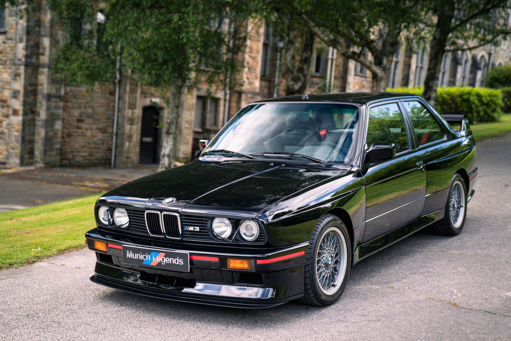
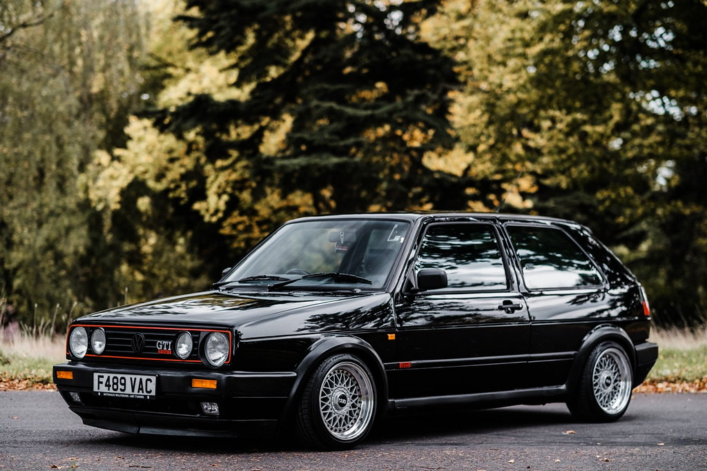

Ketu do i gjeni disa makina Old-Timer qe i ofron
AutoSalloni jone.Shpresojme te ju pelqejne.
BMW E90

Vetura eshte e tipit BMW,i perket gjenerates se OLD-Timer,e prodhuar ne vitin 1990
motorri 2.0,nderruesi shpejtesive manual,karburanti diesel,ka 5 shpejtesi,preferohet per ata te cilet jane marakli te veturave old timer
BMW M3 E90 Qmimi per BMW M3 E90: 10.000$
Mercedes 190
Vetura eshte e tipit Mercedes,i perket gjenerates se OLD-Timer,e prodhuar ne vitin 1990
motorri 2.5,nderruesi shpejtesive manual,karburanti diesel,ka 5 shpejtesi,preferohet per ata te cilet jane marakli te veturave old timer
Mercedes 190 Qmimi per Mercedes 190: 5.000$
Mercedes E180
Vetura eshte e tipit Mercedes,i perket gjenerates se OLD-Timer,e prodhuar ne vitin 1980
motorri 2.5,nderruesi shpejtesive manual,karburanti diesel,ka 5 shpejtesi,preferohet per ata te cilet jane marakli te veturave old timer
Mercedes E 180 Qmimi per Mercedes E180: 7.000$
Golf2 GTI
Vetura eshte e tipit Volfswagen,Golf2-GTI,i perket gjenerates se OLD-Timer,e prodhuar ne vitin 1991
motorri 2.0,nderruesi shpejtesive manual,karburanti benzin,ka 5 shpejtesi,preferohet per ata te cilet jane marakli te veturave old timer
Golf2-GTI Qmimi per Golf2-GTI: 6.000$
Golf2

Vetura eshte e tipit Volfswagen,Golf2,i perket gjenerates se OLD-Timer,e prodhuar ne vitin 1991
motorri 1.6,nderruesi shpejtesive manual,karburanti benzin,ka 5 shpejtesi,preferohet per ata te cilet jane marakli te veturave old timer
Golf2 Qmimi per Golf2: 4.000$